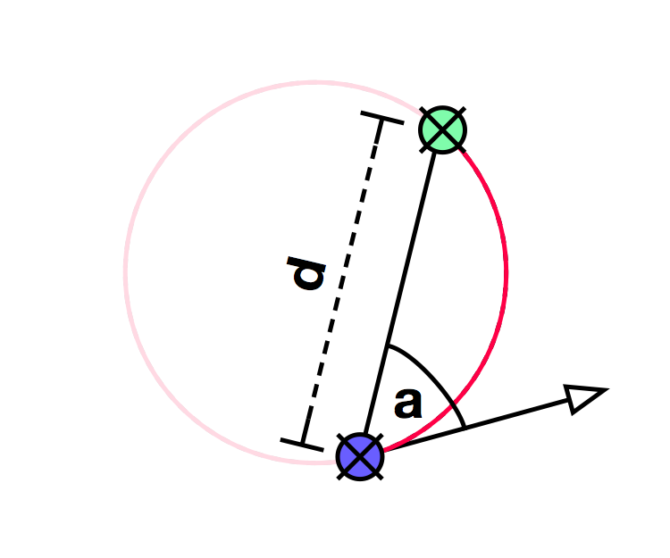
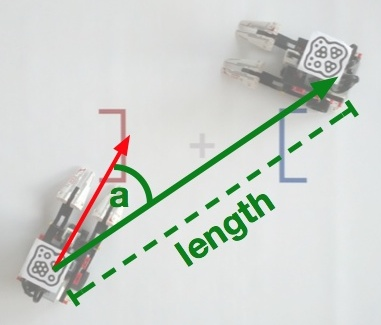

public interface IRobot
An instance of IRobot is globally bound to the this
variable in your script, such that all methods can be called directly at
all locations.
This interface defines commands to steer the robot, to read its state, to use its sensors, to access positions, and to play audio.
There are two variants of movement commands: blocking and non-blocking. Non-blocking commands start a move and return immediately. They do not define a target where the movement should stop, but the movement continues until another move command is called or the game is over. As a consequence, movements cannot be precisely controlled with non-blocking commands, but very smooth transitions between movements are possible. On the other hand, blocking commands define a target of the movement. They will not move the robot beyond this target, and they do not return until the target is reached. This allows to build exact maneuvers without using timers. If the robot is performing a blocking move while the current mode is canceled and the next mode calls a move method, the move is interrupted even if the target has not been reached. If not interrupted, the move will be finished. Blocking commands allow much more precise control over the movements compared to non-blocking commands, but their disadvantage is a small delay between subsequent blocking commands.
| Modifier and Type | Field and Description |
|---|---|
static double |
ARENA_INNER_RADIUS
The radius of the inner edge of the boundary of the arena in centimeters.
|
static double |
ARENA_OUTER_RADIUS
The radius of the outer edge of the boundary of the arena in centimeters.
|
static double |
ROBOT_AXIS_OFFSET
The distance in centimeters between the robot's axis and the back of the robot.
|
static double |
ROBOT_HEIGHT
The total height of the robot in centimeters.
|
static double |
ROBOT_LENGTH
The total length of the robot in centimeters including its scoop.
|
static double |
ROBOT_MARKER_OFFSET
The distance in centimeters between the robot's axis and the fiducial marker.
|
static double |
ROBOT_SCOOP_LENGTH
The length of the robot's scoop (only the part that extends beyond the front
of the robot).
|
static double |
ROBOT_WHEEL_DIAMETER
The diameter of the robot's wheels in centimeters.
|
static double |
ROBOT_WHEEL_DISTANCE
The robot's track width (distance of wheels) in centimeters.
|
static double |
ROBOT_WIDTH
The total width of the robot in centimeters.
|
| Modifier and Type | Method and Description |
|---|---|
void |
curveBackward(double radius,
double angle)
Let the robot travel a backward curve following a segment with the given
angle
in degrees of a circle with the given radius in centimeters. |
void |
curveForward(double radius,
double angle)
Let the robot travel a forward curve following a segment with the given
angle
in degrees of a circle with the given radius in centimeters. |
void |
curveTo(double distance,
double angle)
Let the robot travel a forward curve to the point with the polar
coordinates
angle in degrees and distance in centimeters. |
void |
drive(double distance)
Move the robot forward or backward by
distance centimeters at the current
driving speed. |
void |
driveBackward()
Move the robot backward at the current driving speed until it is stopped.
|
void |
driveForward()
Move the robot forward at the current driving speed until it is stopped.
|
Vector |
getCenterBearing()
Get the bearing of the center of the arena.
|
double |
getDrivingSpeed()
Return the currently set driving speed in centimeters/second.
|
double |
getGroundColor()
Returns the brightness value of the ground color as measured by the color sensor.
|
double |
getMaxDrivingSpeed()
Return the maximal driving speed in centimeters/second.
|
double |
getMaxRotationSpeed()
Return the maximal rotation speed in degrees/second.
|
Vector |
getOpponentBearing()
Get the bearing of your opponent.
|
RobotPosition |
getOpponentPosition()
Get the current absolute position of your opponent.
|
RobotPosition |
getOwnPosition()
Get the current absolute position of the robot.
|
double |
getRotationSpeed()
Return the currently set rotation speed in degrees/second.
|
boolean |
isMoving()
Determine whether the robot is currently executing a movement command.
|
void |
play(Sample sample)
Play one of the predefined audio samples (see
Sample). |
void |
rotate(double angle)
Rotate the robot on the spot by
angle degrees at the current rotation speed. |
void |
rotateLeft()
Rotate the robot counter-clockwise (left) at the current rotation speed until it
is stopped.
|
void |
rotateRight()
Rotate the robot clockwise (right) at the current rotation speed until it is stopped.
|
void |
say(java.lang.String text)
Let the robot say a line of text.
|
void |
scoop(double position)
Move the robot's scoop to the specified position.
|
void |
setDrivingSpeed(double speed)
Set the speed in centimeters/second for subsequent driving commands.
|
void |
setRotationSpeed(double rotationSpeed)
Set the speed in degrees/second for subsequent rotation commands.
|
void |
sleep(int milliseconds)
Wait for the specified number of milliseconds before executing the next command.
|
void |
startMotors(double leftSpeed,
double rightSpeed)
Set both motors into motion with the given speed values in centimeters/second.
|
void |
stop()
Stop all motors immediately.
|
void |
update()
Update the robot with the latest sensor data and robot state.
|
static final double ROBOT_LENGTH
static final double ROBOT_WIDTH
static final double ROBOT_HEIGHT
static final double ROBOT_WHEEL_DIAMETER
static final double ROBOT_WHEEL_DISTANCE
static final double ROBOT_SCOOP_LENGTH
static final double ROBOT_MARKER_OFFSET
static final double ROBOT_AXIS_OFFSET
static final double ARENA_OUTER_RADIUS
static final double ARENA_INNER_RADIUS
double getGroundColor()
If this command is called repeatedly in the same mode, it returns the same values
unless the robot state is updated with the update() command.
This command is non-blocking, i.e. it returns immediately.
void startMotors(double leftSpeed,
double rightSpeed)
This command is non-blocking, i.e. it returns immediately and the motors
continue moving until stop() or any other movement command is called.
leftSpeed - the speed of the left motor in centimeters/secondrightSpeed - the speed of the right motor in centimeters/secondvoid drive(double distance)
distance centimeters at the current
driving speed. The speed is set with setDrivingSpeed(double). If the distance
is positive, the robot drives forward, otherwise it drives backward.
This command blocks the current mode's execution until the movement is complete.
Once finished, the motors are stopped. If the current mode is canceled and another
mode calls stop() or any other movement command, this command is also canceled.
distance - the distance in centimetersvoid driveForward()
setDrivingSpeed(double).
This command is non-blocking, i.e. it returns immediately and the motors
continue moving until stop() or any other movement command is called.
void driveBackward()
setDrivingSpeed(double).
This command is non-blocking, i.e. it returns immediately and the motors
continue moving until stop() or any other movement command is called.
void setDrivingSpeed(double speed)
The following commands are affected by the driving speed:
drive(double)driveForward()driveBackward()curveForward(double, double)curveBackward(double, double)curveTo(double, double)getMaxDrivingSpeed().
The sign of the given speed value is ignored.speed - the driving speed in centimeters/seconddouble getDrivingSpeed()
setDrivingSpeed(double).
If this command is called repeatedly in the same mode, it returns the same values
unless the robot state is updated with the update() command.
double getMaxDrivingSpeed()
The returned value can be used as a reference for setDrivingSpeed(double)
commands. For example, drivingSpeed = 0.5 * maxDrivingSpeed sets the speed
to half of the maximal speed.
void rotate(double angle)
angle degrees at the current rotation speed.
The speed is set with setRotationSpeed(double). A positive angle means to
rotate counter-clockwise (left), while a negative angle means to rotate clockwise (right).
This command blocks the current mode's execution until the rotation is complete.
Once finished, the motors are stopped. If the current mode is canceled and another
mode calls stop() or any other movement command, this command is also canceled.
angle - the rotation angle in degreesvoid rotateLeft()
setRotationSpeed(double).
This method is non-blocking, i.e. it returns immediately and the motors
continue moving until stop() or any other movement command is called.
void rotateRight()
setRotationSpeed(double).
This method is non-blocking, i.e. it returns immediately and the motors
continue moving until stop() or any other movement command is called.
void setRotationSpeed(double rotationSpeed)
The following commands are affected by the rotation speed:
The maximal speed can be obtained withgetMaxRotationSpeed().
The sign of the given speed value is ignored.rotationSpeed - the rotation speed in degrees/seconddouble getRotationSpeed()
setRotationSpeed(double).
If this command is called repeatedly in the same mode, it returns the same values
unless the robot state is updated with the update() command.
double getMaxRotationSpeed()
The returned value can be used as a reference for setRotationSpeed(double)
commands. For example, rotationSpeed = 0.5 * maxRotationSpeed sets the speed
to half of the maximal speed.
void curveForward(double radius,
double angle)
angle
in degrees of a circle with the given radius in centimeters.
A positive angle means a counter-clockwise curve (left), while a negative angle
means a clockwise curve (right). The sign of the radius is ignored.
The speed of this movement is set with setDrivingSpeed(double).
This command blocks the current mode's execution until the rotation is complete.
Once finished, the motors are stopped. If the current mode is canceled and another
mode calls stop() or any other movement command, this command is also canceled.
radius - The radius in centimeters of the circle on which to travelangle - The angle in degrees of the circle segment that is actually coveredvoid curveBackward(double radius,
double angle)
angle
in degrees of a circle with the given radius in centimeters.
A positive angle means a clockwise curve (left), while a negative angle means a
counter-clockwise curve (right). The sign of the radius is ignored.
The speed of this movement is set with setDrivingSpeed(double).
This command blocks the current mode's execution until the rotation is complete.
Once finished, the motors are stopped. If the current mode is canceled and another
mode calls stop() or any other movement command, this command is also canceled.
radius - The radius in centimeters of the circle on which to travelangle - The angle in degrees of the circle segment that is actually coveredvoid curveTo(double distance,
double angle)
angle in degrees and distance in centimeters.
You can directly use the values returned by getOpponentBearing() or
getCenterBearing() to drive a curve to the opponent resp. center.
The following picture illustrates the curve: The own position is the blue marker.
The arrow points into the view direction. The angle a and the distance
d define the target point. The curve is the section of the circle that
connects both points and is tangent to the view vector.

The angle is normalized to be between -180 and 180 degrees. If the
angle is close to 0° the robot drives distance
centimeters forward, and if it is close to +/-180° it drives backward.
A positive angle means a counter-clockwise curve (left), while a negative angle means
a clockwise curve (right). Note that the curve can leave the arena when the angle's
absolute value is too large.
The speed of this movement is set with setDrivingSpeed(double).
This command blocks the current mode's execution until the rotation is complete.
Once finished, the motors are stopped. If the current mode is canceled and another
mode calls stop() or any other movement command, this command is also canceled.
distance - The distance in centimeters of the targeted point from the robot's current positionangle - The angle in degrees of the targeted point relative to the robot's view direction.
It will be normalized to be between -180 and 180 degrees.boolean isMoving()
If this command is called repeatedly in the same mode, it returns the same values
unless the robot state is updated with the update() command.
void stop()
void scoop(double position)
Values are
This command is non-blocking, in the sense that it returns immediately and the scoop motor continues moving until it reaches the specified position. But if another scoop command is given, it is blocked until the first command has finished its movement.
position - The target position of the robot's scoop (between -1 and +1)void play(Sample sample)
Sample).sample - A reference to a predefined samplevoid say(java.lang.String text)
text - A text that shall be spoken by the robotvoid sleep(int milliseconds)
milliseconds - The number of milliseconds to waitvoid update()
The state is usually only updated when the modes' conditions are checked. A new mode is entered with exactly that state to make sure the condition still holds. Use this method if you need fresh data during a mode's execution.
The following commands are affected by state updates:
RobotPosition getOwnPosition()
The coordinates are relative to the center of the arena in a right handed coordinate system. The view direction ranges from -180° to 180° and is relative to the x-axis. A positive view direction means the robot is looking into the positive y-direction. The value denotes the center of the robot's rear axle.
If this command is called repeatedly in the same mode, it returns the same values
unless the robot state is updated with the update() command.
RobotPosition getOpponentPosition()
The coordinates are relative to the center of the arena in a right handed coordinate system. The view direction ranges from -180° to 180° and is relative to the x-axis. A positive view direction means the robot is looking into the positive y-direction. The reference point is the center of the robot's rear axle.
If this command is called repeatedly in the same mode, it returns the same values
unless the robot state is updated with the update() command.
Vector getOpponentBearing()
The reference points are the centers of the robots' rear axles.
The following picture illustrates the values of the angle a and
length with respect to the own view direction.

If this command is called repeatedly in the same mode, it returns the same values
unless the robot state is updated with the update() command.
Vector getCenterBearing()
The reference point is the center of the robot's rear axle.
If this command is called repeatedly in the same mode, it returns the same values
unless the robot state is updated with the update() command.